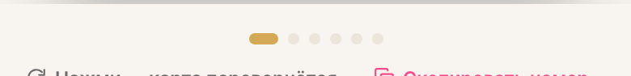

О1
Точки-индикаторы карусели почти не видны в светлой теме
не пройдено- Кадр
crop dots-light.png,wallet-money-390-light.png- Маршрут
/profile/wallet,/profile/wallet?account=18- Вьюпорт × тема
- 320 / 390 / 768 / 1440 × светлая (в тёмной — лучше: 8.38:1 у активной)
- Ожидалось
- Индикатор выбранной карты различим как элемент управления (порог для нетекстовых элементов — 3:1 к фону).
- Получено
- Неактивная точка
#ece5daна фоне страницы#f8f5f0— 1.15:1; активная золотая#d4a854— 2.03:1. Точки 7×7 px, активная — пилюля 18×7 px. - Селектор
.wallet__dot/.wallet__dot_active—src/modules/profile-balance/ProfileWallet.vue(фон из--lv-lineи--lv-gold)- Влияние
- Среднее. В светлой теме индикатор фактически исчезает, а на 320/390 это единственная подсказка, что карт несколько.
